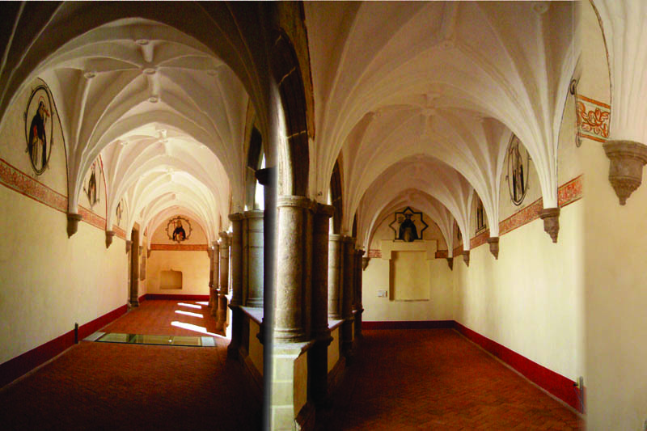
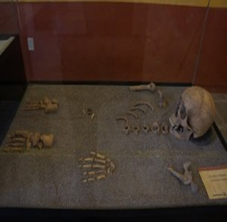

MUSEOS
CASA DE CULTURA"

DATOS : Fecha fundación: 31 de octubre de 1994 Superficie m2:100 Se cuenta con Talleres: De Música, De dibujo y pintura,
Ballet clásico, danza folklorica, pintura textil Y en cerámica, carate capoeira, danza polinesia, tae-kwon-do, bordado en listón, zumba, aerobics, inglés.
"LAS BOCAS"

Las Bocas es un sitio arqueológico localizado en el municipio de Izúcar de Matamoros (Puebla, México). Está relacionado con varias piezas arqueológicas de estilo olmeca, especialmente figurillas de cerámica y otras obras de alfarería. El sitio de Las Bocas fue intensamente explorado en los años sesenta por coleccionistas interesados en la cerámica y figurillas olmecas.
IR A INICIO